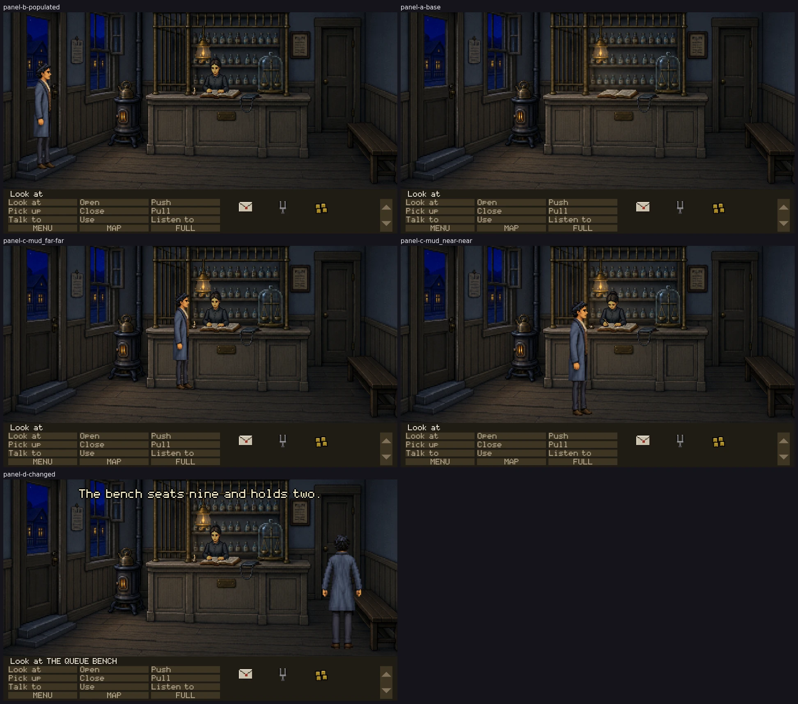

Every frame below is the full play area as the renderer drew it, in the running
game, at 8cf80ae4 on claude/last-claim-autonomy-audit-v3vsy6.
No crop, isolated sprite or source image appears here: those are for diagnosing what a full
frame has already shown.
These panels establish technical admissibility only. Nothing here says the
art is good, in style, funny or approved. Only Tyler sets visual_accepted.

THE COMMITTED SHEETEvery panel, complete, at
50% —
downscaled, never cropped. The full-resolution captures are reproducible test artifacts
and are not in git; their hashes are below.
PASS — technically admissible
PANEL B — normal populated stateroom assay_office · camera 0 ·
flags T_OPENING_SAID T_COACH_DEPARTED T_UNDERTAKER_NAMED T_HOB_CROSSING T_THAD_LEAVING T_HOB_SPOKEN T_HOB_GONE T_OPENING_DONE T_SEEN_MAIN_STREET T_CASE_DOWN T_CASE_TAKEN ·
inventory letter tuning_fork four_dollarsthad @200,765 515px spritePANEL A — base state, cast suppressedroom assay_office · camera 0 ·
flags T_OPENING_SAID T_COACH_DEPARTED T_UNDERTAKER_NAMED T_HOB_CROSSING T_THAD_LEAVING T_HOB_SPOKEN T_HOB_GONE T_OPENING_DONE T_SEEN_MAIN_STREET T_CASE_DOWN T_CASE_TAKEN ·
inventory letter tuning_fork four_dollarsthad @200,765 515px spritePANEL D — principal changed state: THE QUEUE BENCH, acts 2-4. docs/05-examine-layer.md::ROOM 5 — ASSAY OFFICE, FRONT#2 writes its LOOK for act 2-4 and nothing for Act I; docs/49 gives it USE and PUSH. Prerequisite: ACT >= 2, which the game sets at doc 48's S1 (not built). Visible consequence: the bench becomes a target -- its LOOK line, and Thad walks to it. The bench itself is plate in every act.room assay_office · camera 0 ·
flags T_OPENING_SAID T_COACH_DEPARTED T_UNDERTAKER_NAMED T_HOB_CROSSING T_THAD_LEAVING T_HOB_SPOKEN T_HOB_GONE T_OPENING_DONE T_SEEN_MAIN_STREET T_CASE_DOWN T_CASE_TAKEN ·
inventory letter tuning_fork four_dollarsthad @1650,827 558px spritePANEL C — mud_far far, authored y701expected 471px · runtime 471px ·
silhouette 480px, bottom y700art/actors/thad-idle-right/idle-03.pngPANEL C — mud_near near, authored y829expected 559px · runtime 559px ·
silhouette 579px, bottom y828art/actors/thad-idlebreak-right/idle-break-01.png